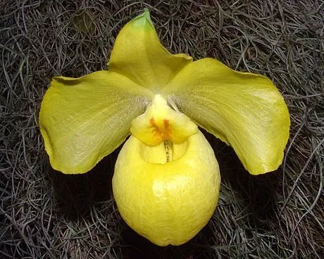

花卉与草本 · 植物界
杏黄兜兰 Paphiopedilum armeniacum

兰科兜兰属多年生草本，花朵杏黄色、唇瓣呈兜状，是中国云南西部原产的珍稀兰花，因过度采挖被列入 CITES 附录Ⅰ。
- 分类
- 门被子植物门纲木兰纲目天门冬目科兰科属兜兰属
- 栖息环境
- 云南西部石灰岩山地林下，喜凉爽、湿润、半阴
- 地理分布
- 原产中国云南西部，缅甸北部可能也有分布
- 保护级别
- 暂无评估；CITES 附录Ⅰ；列入中国国家重点保护野生植物名录
物种志
杏黄兜兰为兰科兜兰属多年生草本，地生或半附生，株高 10–20 厘米，具短而匍匐的根状茎。叶片 3–5 枚，长圆形，革质，表面有深浅相间的斑纹。花单生花葶顶端，直径 6–8 厘米，杏黄色，唇瓣膨大成兜状，花期 2–4 月；果实为蒴果。
杏黄兜兰原产中国云南西部的高山峡谷，生于海拔 1400–2100 米的石灰岩山地林下，喜凉爽、湿润、通风和半阴的环境。它花形奇特、色泽明丽，被发现后曾在国际兰花界引起轰动，也因过度采挖和栖息地破坏而野生资源锐减。目前兜兰属所有种均被列入 CITES 附录Ⅰ，严禁国际贸易，中国也已将其列入重点保护野生植物名录，人工繁殖个体需通过合法渠道购买。
形态与习性
- 株高10–20 厘米，叶 3–5 枚
- 花期2–4 月，花杏黄色，唇瓣呈兜状
- 果期花后结蒴果
- 光照喜半阴散射光，忌强光
- 水分喜湿润，空气湿度宜 70% 以上
- 土壤疏松透气、富含腐殖质的石灰质基质
- 繁殖分株、无菌播种
- 主要用途珍稀观赏兰花、保护与繁育研究
趣味知识
- 杏黄兜兰的唇瓣膨大成兜状，是兜兰属的典型特征。
- 它原产云南西部石灰岩山地，被发现后曾轰动国际兰花界。
- 因过度采挖，兜兰属所有种都被列入 CITES 附录Ⅰ，严禁国际贸易。
- 人工繁殖杏黄兜兰难度较大，市场上合法个体多来自专业繁育机构。